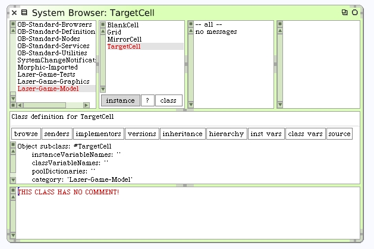

Create Some Model Classes
Define the 4 model classes we identified before. Be sure to select "Laser-Game-Model" in the system category first. Each new class will be a subclass of Object.
When you select the Laser-Game-Model category, you see a class creation template on the bottom pane of the Browser. Fill it out as shown, then right-click and press "accept" (or press the keystroke alt-s/cmd-s -- depending on platform)